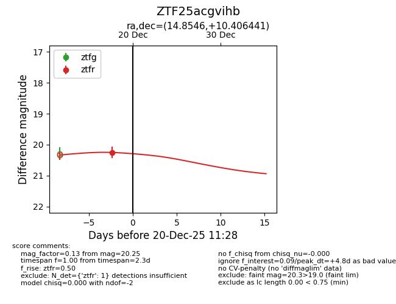
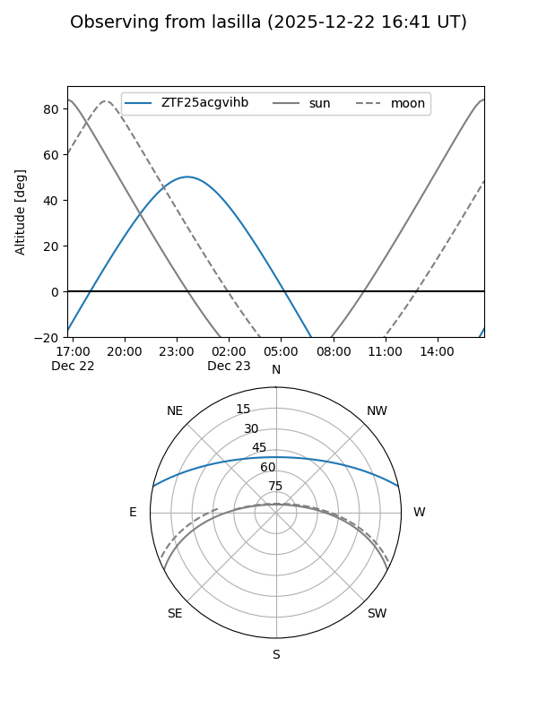
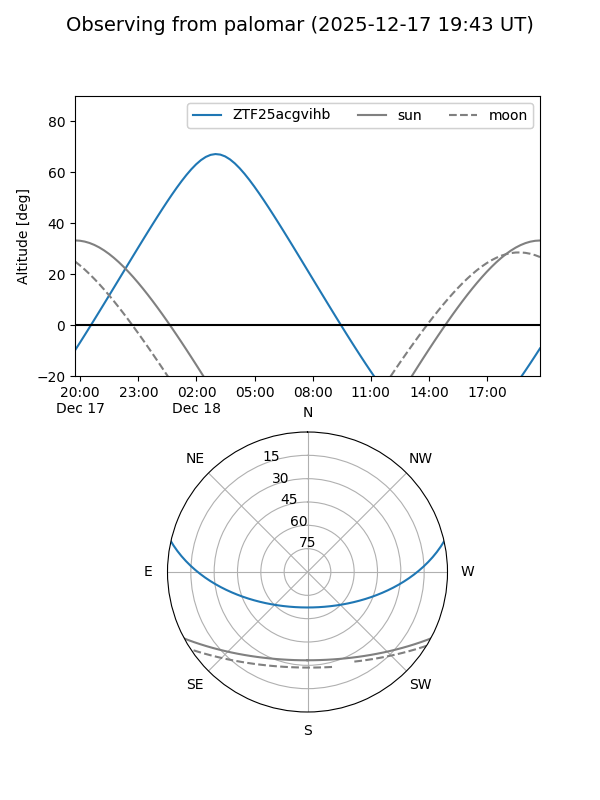
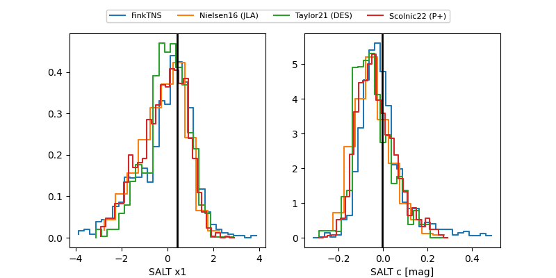

ZTF25acgvihb
Target ZTF25acgvihb at 2025-12-20 11:30
Aliases and brokers:
FINK: fink-portal.org/ZTF25acgvihb
Lasair: lasair-ztf.lsst.ac.uk/objects/ZTF25acgvihb
ALeRCE: alerce.online/object/ZTF25acgvihb
alt names
ZTF25acgvihb (ztf,fink_ztf)
Coordinates:
equatorial (ra, dec) = 14.8546,+10.40644
equatorial (HMS+DMS) = 00:59:25.10,+10:24:23.19
galactic (l, b) = (126.1502,-52.41543)
Flags:
Photometry:
last ztfr=20.25
1 ztfr detections
Lightcurve

Visibility


Additional plots
